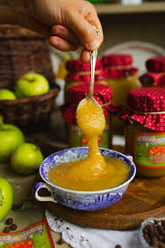

Be careful choosing your apples! Some varieties tend to become watery when cooked. Some of the better apples for cooking include:
Fuji
Gala
McIntosh
Melrose
Jonathan
Golden Delicious
Let's get our ingredients together!
For today's recipe, we will be gathering copious amounts of apples. So be prepped
9 cups of sliced, any variety of aformentioned apples will be good.
1/2 cup apple cider
1 tablespoon lemon juice
1/2 cup sugar
1/8 teaspoon salt
1/2 teaspoon nutmeg
Cream (optional)
Cinnamon (optional)
Here are the tools for the task!
3-quart saucepan
and that's it
Let's do it!

Combine apples, cider, and lemon juice in a 3-quart saucepan. Bring to a boil over medium hear, and simmer until apples are tender. This should take about 15 to 20 minutes.
Next, add sugar, salt, and nutmeg. Cook for a minute or so longer.